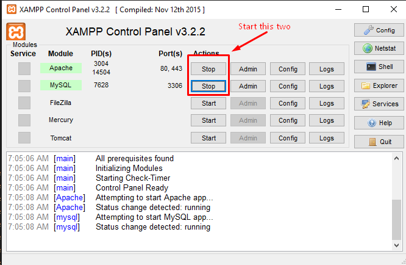

Installing The Server Xampp
- Open the CD disk find the Xampp application and install it (Do not change the installation directory, it will automatically installed in C Drive)
- When comfirmation prompts appear make sure to click "Yes".
- A Xampp Setup window will appear, just click next, next ..... until installation starts.
- After finish the installation go to C:\xampp and find xampp control-panel application and open it.
-
A window like this will open, start the two services Apache and MySQL.
